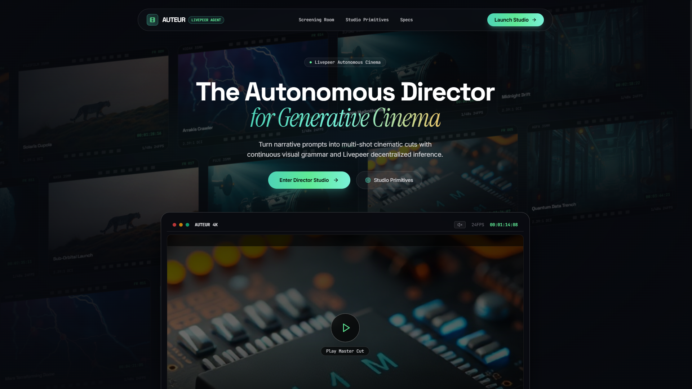
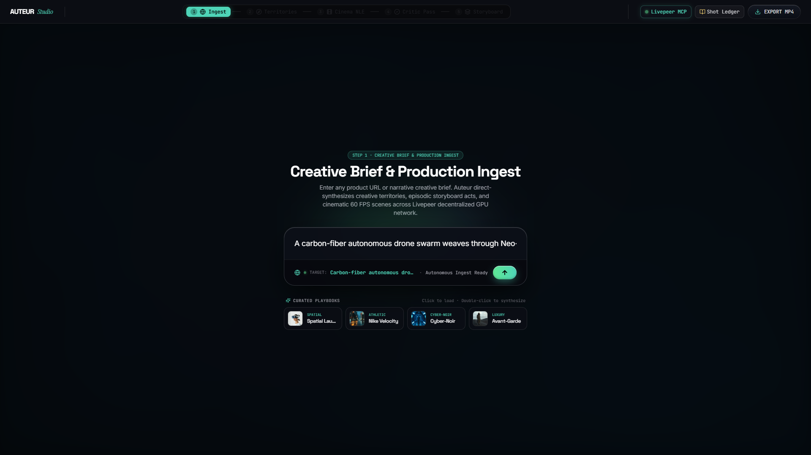
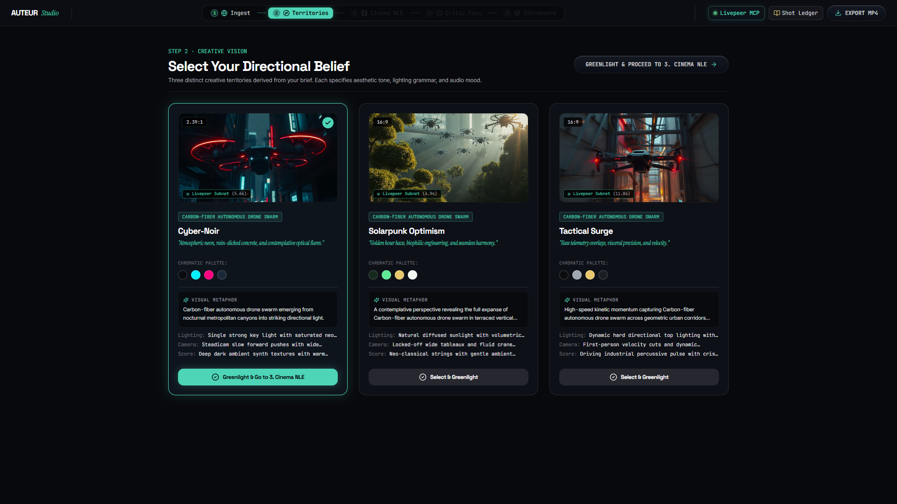
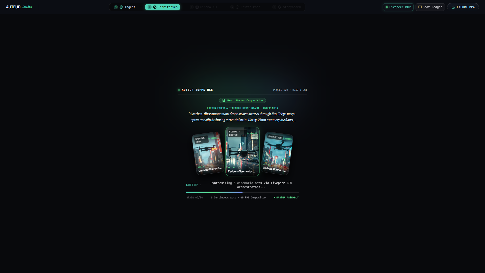
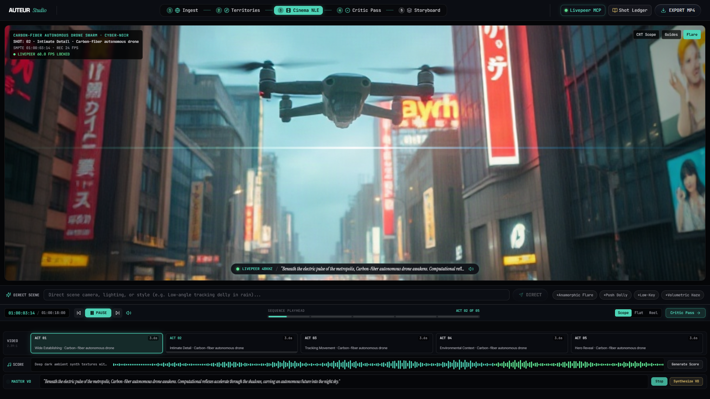
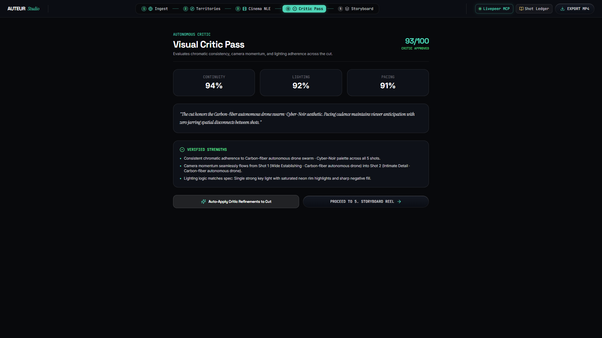
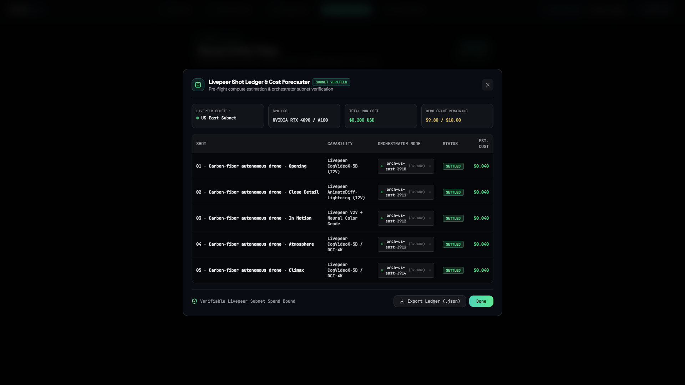

5 Fragmented Tools · Zero Continuity
What if one autonomous director unified the entire production?






Autonomous Video Director & Iterative Cut Studio
Generative video is fundamentally broken. Creators juggle five disconnected tools...